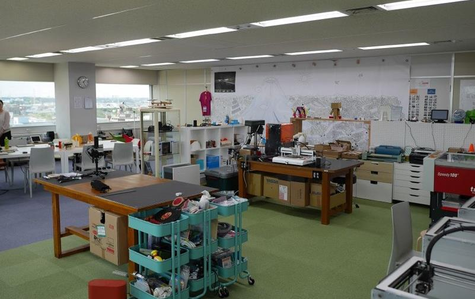
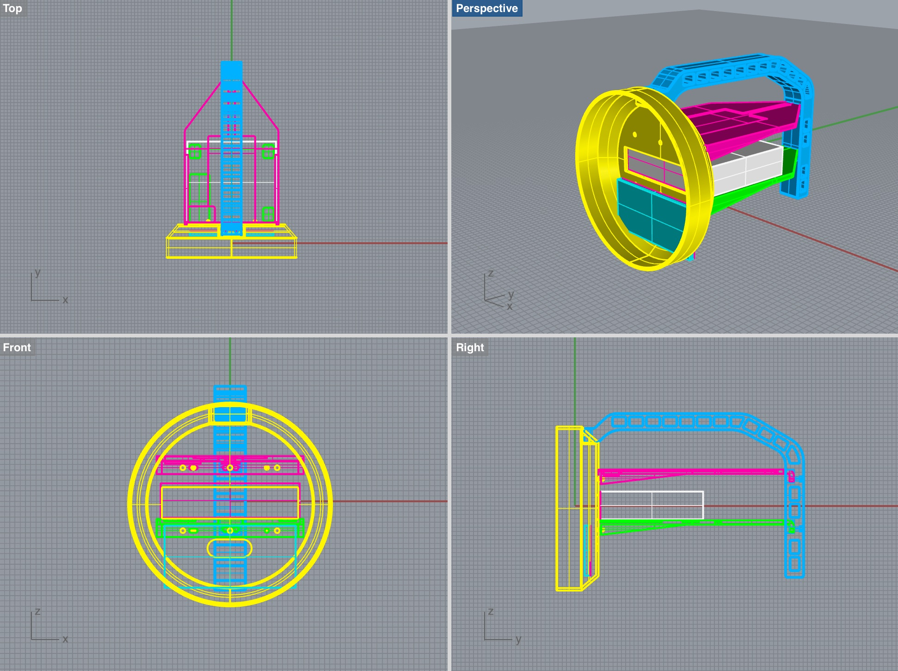
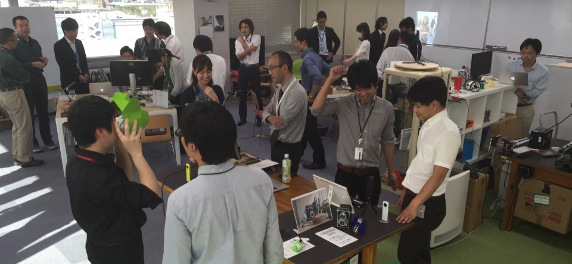
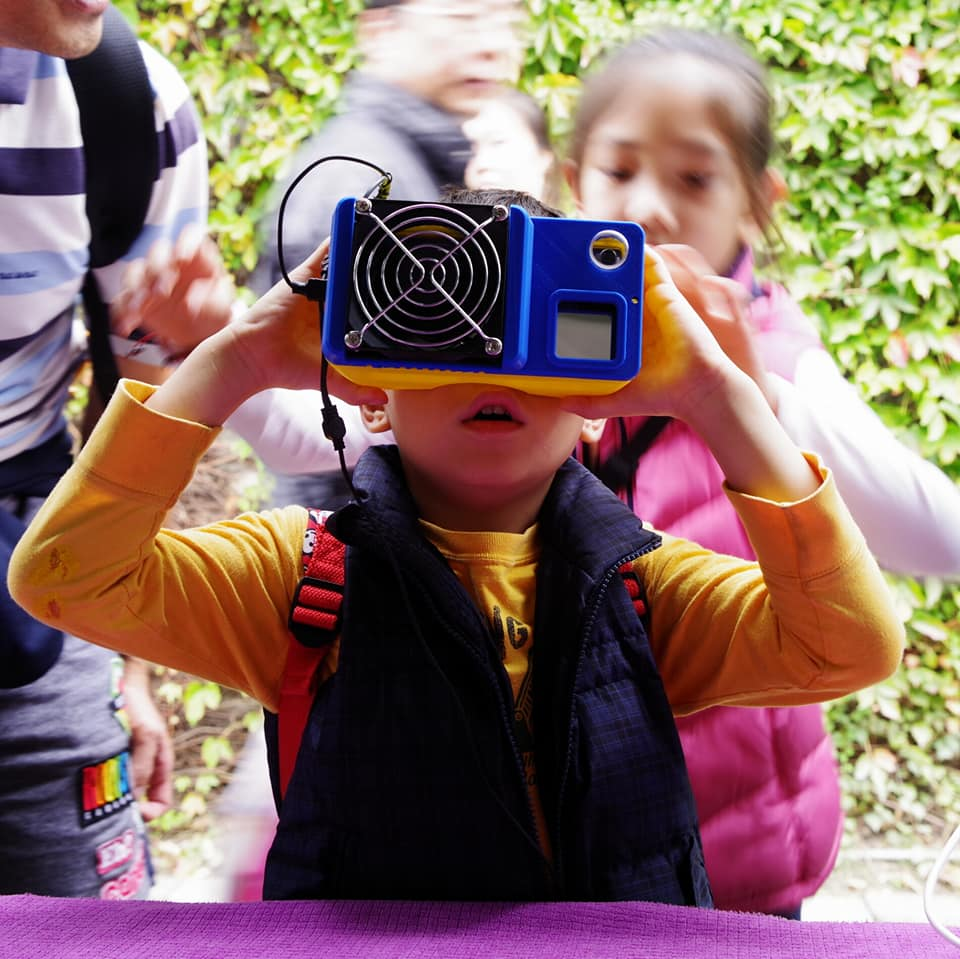
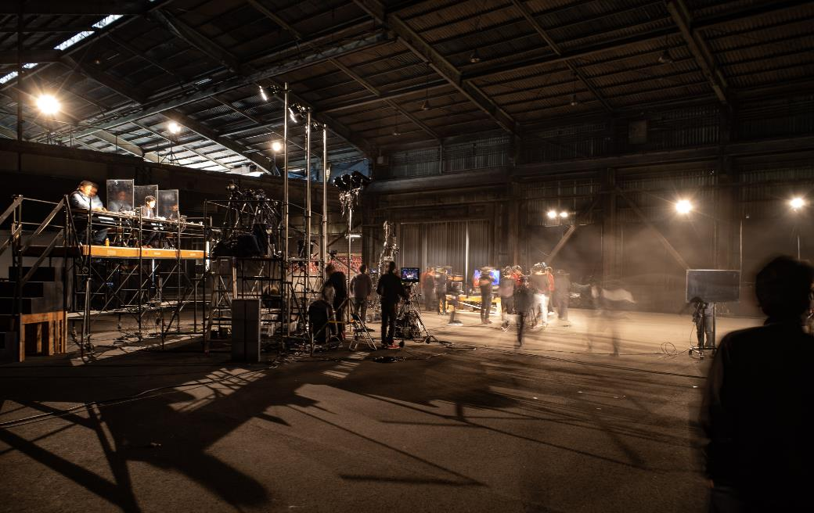

Selected Work — 07
つくる〜む
PPTの先へ。ユーザーの声と手触りのあるプロトタイプで、新規事業の「本当の問い」を見つける場をつくった。
Background
新規事業検討は、なぜPPTで止まるのか。
大企業の新規事業検討は、多くの場合スライドの中で完結する。市場分析、競合比較、事業計画——どれだけ精緻に仕上げても、ユーザーと対話した形跡がなければ、それは仮説の積み重ねに過ぎない。
「本当にユーザーが求めているか」を確かめる前に、社内の承認プロセスで消耗してしまう。そういう光景を繰り返し見てきた。
Concept
つくることで、考える。
社内に3Dプリンタ、レーザーカッター、各種工作機器を揃えたファブスペース「つくる〜む」を立ち上げた。ただのものづくり設備ではなく、新規事業検討のプロセスそのものを変えるための場として設計した。
想定ユーザーに近い形のプロトタイプをすばやくつくり、実際に使ってもらう。そこで得られるフィードバックは生々しく、資料には書けない本音が含まれている。「これは便利」ではなく「こういう時に使いたい」「ここが引っかかる」という声が、事業の解像度を上げていく。


市場調査 → スライド作成 → 社内承認 → ユーザー検証（遅い）
ユーザーと対話 → プロトタイプ制作 → 実使用フィードバック → 事業提案（速い）

What We Learned
相談が集まることで、見えてきたもの。
スペースが整うと、社内外からさまざまな相談が持ち込まれるようになった。新規事業を検討しているチーム、技術をどう活かすか迷っている研究者、顧客への提案を試したいセールス——目的も背景も異なる人たちをサポートするうちに、あるパターンが見えてきた。
事業検討がつまづく場所は、ほぼ共通していた。そして、どういうプロセスと体制で進めれば乗り越えられるかも、繰り返しの支援の中で輪郭が見えてきた。

-
01
問いの設定がずれている 「何をつくるか」から入ってしまい、「誰のどんな課題か」が後回しになる。プロトタイプを通じてユーザーと対話することで、問い自体を立て直す。
-
02
検証のサイクルが遅すぎる 承認を取ってから動こうとするため、仮説が古くなる。小さく速くつくって、すぐに当てる文化が必要。
-
03
成果が個人に閉じている スペースでの経験や発見が、個人の学びで終わる。組織に還元する仕組みと、共有できるコミュニティが必要。
What Came Next
この場所が、次の挑戦の種になった。
つくる〜むで積み重ねた支援の経験と、事業検討のプロセスへの理解が、社内外統合型アクセラレータープログラム「TRIBUS」の設計に直接つながった。個人を支援する場から、組織全体の挑戦する文化をつくる仕組みへ——その発展は必然だった。
また、「つくることを楽しむ」という空気が社内に生まれたことで、NHK「魔改造の夜」への出場という、誰も予想しなかった挑戦も実現した。参加希望者の中から2チーム約40名を面談で選び、制作会社との折衝、予算と進捗の管理まで自分で持った。スペースが育てたのは、機器の使い方だけではなかった。

Connected Projects